Documento de Histórias de Usuário (User Stories) e Critérios de Aceitação
Legenda: ✅ = Dentro do MVP / ❌ = Fora do MVP
US01 — Autenticação de Usuário ✅
US01 - Autenticação de Usuário
Como usuário, quero efetuar login no sistema utilizando e-mail e senha, para acessar minha conta na plataforma de forma segura.
Critérios de Aceitação:
- CA-US01-01: O sistema deve exigir um e-mail válido e a senha correta; o acesso só é liberado se os dados coincidirem exatamente com o banco de dados.
- CA-US01-02: Se a senha ou o e-mail estiverem incorretos, o sistema exibe uma mensagem de erro geral ("E-mail ou senha incorretos") por motivos de segurança.
- CA-US01-03: Após o login bem-sucedido, o sistema gera uma sessão segura por até 1 hora e direciona o usuário automaticamente para a sua tela inicial.
Verificação do Definition of Ready (DoR) — US01
| Pergunta de Auditoria do DoR (Scrum/XP) | Status | Evidência / Justificativa Técnica |
|---|---|---|
| A User Story é atômica e clara? | Sim | O escopo foi totalmente isolado. A US01 trata exclusivamente do fluxo de autenticação e validação de credenciais de usuários existentes, sem carregar regras de criação de novas contas ou recuperação de acessos. |
| Possui Critérios de Aceitação explícitos? | Sim | Foram definidos os critérios CA-US01-01 a CA-US01-03. Eles cobrem tanto o fluxo feliz quanto o comportamento defensivo em cenários de dados inválidos. |
| Há rastreabilidade de restrições (RNFs) e Regras de Negócio (RNs)? | Sim | Mapeamento explícito para respeitar a RN01, RNF04, RNF05 e RNF12. |
| A prioridade está coerente e justificada? | Sim | Classificada como Must Have via matriz MoSCoW, pois representa a porta de entrada do sistema. |
| O esforço foi estimado conjuntamente? | Sim | O esforço de engenharia foi discutido e pontuado consensualmente em 2 Story Points. |
| Resolução de dependências validada? | Sim | A estrutura de dados para verificação de credenciais e o protótipo da interface já estavam homologados antes do início do código. |
- Status Final: 🟢 Done
| Critério de Pronto (DoD V4.0) | Status | Evidência de Implementação e Qualidade |
|---|---|---|
| 1. Implementação Arquitetural | Concluído | Código front-end em React 18+ / TypeScript 5+ e back-end em Python 3.11+ / Django 4.2+ finalizados. |
| 2. Comunicação via API | Concluído | O React consome exclusivamente os endpoints REST de geração e renovação de token JWT do Django (RNF05). |
| 3. Operações Django Admin | Não aplicável | Critério não aplicável para esta história. |
| 4. Validação de CAs | Concluído | Critérios CA-US01-01 a CA-US01-03 testados com sucesso. |
| 5. Garantia das RNs | Concluído | O sistema emite o token JWT com as credenciais corretas e aciona a RN01. |
| 6. Validação de RNFs (RNF11) | Concluído | Interface de login testada e fluida em telas de 360px. |
| 7. Integração Contínua (CI) | Concluído | Código integrado à branch principal sem regressões. |
| 8. Homologação e Validação | Concluído | Funcionalidade operando em ambiente de produção (Vercel) e validada com a cliente (PO). |
Links de Rastreabilidade e Artefatos
Link no site: https://req-2026-1-t01-morfo-blocos-digital.vercel.app/
Fluxo de Acesso:
a. Acesse a página inicial da aplicação.
b. Localize o formulário de autenticação centralizado na interface principal.
c. Preencha os campos obrigatórios (E-mail e Senha).
d. Clique no botão de submissão "Entrar" para validar as credenciais e iniciar a sessão.
US02 — Cadastro de Nova Conta ✅
US02 — Cadastro de Nova Conta
Como usuário, quero cadastrar uma nova conta no sistema inserindo meus dados, para que meu perfil seja criado e eu possa começar a usar a plataforma.
Critérios de Aceitação (CA)
- CA-US02-01: O sistema exige obrigatoriamente e-mail, senha e a escolha do perfil (se é Estudante ou Professor), bloqueando o envio de campos vazios.
- CA-US02-02: O sistema impede o cadastro de um e-mail que já esteja previamente registrado na base de dados.
- CA-US02-03: O sistema deve validar o formato estrutural do e-mail (ex: nome@dominio.com), exibindo um alerta visual em caso de erro.
- CA-US02-04: O sistema exige que o campo de senha e a confirmação de senha sejam rigorosamente iguais.
- CA-US02-05: A interface da tela de cadastro deve ser totalmente responsiva em ecrãs/telas a partir de 360px de largura, sem qualquer sobreposição de textos, campos desalinhados ou surgimento de barra de rolagem horizontal (scroll lateral).
Verificação do Definition of Ready (DoR) — US02
| Pergunta de Auditoria do DoR (Scrum/XP) | Status | Evidência / Justificativa Técnica |
|---|---|---|
| A User Story é atômica e clara? | Sim | O escopo foi isolado com foco único na criação de credenciais de acesso. O fluxo de autenticação/login ficou restrito à US01, eliminando dependências cruzadas ou a criação de um Épico camuflado. |
| Possui Critérios de Aceitação explícitos? | Sim | Foram especificados os critérios de CA-US02-01 a CA-US02-05, cobrindo os fluxos de sucesso, validações obrigatórias de campos e a restrição de tamanho de tela. |
| Há rastreabilidade de restrições (RNFs) e Regras de Negócio (RNs)? | Sim | Mapeamento explícito para respeitar a RN02 (Unicidade de e-mail no banco), RNF04 (Criptografia de senhas), RNF05 (Comunicação via API REST), RNF11 (Responsividade 360px) e RNF12 (Acesso via navegador por HTTP/HTTPS). |
| A prioridade está coerente e justificada? | Sim | Classificada como Must Have via matriz MoSCoW, pois a criação de perfis é um pré-requisito fundamental para que os usuários utilizem as demais funcionalidades do ecossistema. |
| O esforço foi estimado conjuntamente? | Sim | O esforço técnico para construir o formulário de cadastro, aplicar as validações de input em tempo real e criar a rota de persistência foi discutido pelo time e pontuado em 2 Story Points. |
| Resolução de dependências validada? | Sim | Os modelos de dados para criação de usuários e o protótipo de alta fidelidade da tela de cadastro já estavam homologados pela PO e disponíveis antes do início da codificação. |
| Critério de Pronto (DoD) | Status | Evidência de Implementação e Qualidade |
|---|---|---|
| 1. Implementação Arquitetural | Concluído | Componentes do formulário criados e mapeados para persistência no banco de dados PostgreSQL 15+. |
| 2. Comunicação via API | Concluído | Rota de POST consumindo o payload de criação de conta e respondendo com os códigos de status REST corretos. |
| 3. Operações Django Admin | Concluído | Os novos perfis cadastrados pelo usuário são espelhados com sucesso no painel administrativo padrão do Django. |
| 4. Validação de CAs | Concluído | Validação estrutural de inputs obrigatórios, formato de e-mail e checagem de senhas iguais (CA-US02-01 a CA-US02-04). |
| 5. Garantia das RNs | Concluído | O banco de dados rejeita cadastros duplicados, garantindo a política invariante da RN02 (unicidade de e-mail). |
| 6. Validação de RNFs (RNF11) | Concluído | Resolvido: O seletor de perfil foi refatorado. Os botões adaptam-se em telas de 360px sem gerar quebras ou scroll lateral (CA-US02-05). |
| 7. Integração Contínua (CI) | Concluído | Código integrado à branch principal sem regressões visuais e build de produção gerado com sucesso. |
| 8. Homologação e Validação | Concluído | Interface testada no ambiente móvel, homologada internamente e validada com sucesso junto à cliente (PO). |
Links de Rastreabilidade e Artefatos
Link no site: https://req-2026-1-t01-morfo-blocos-digital.vercel.app/
Fluxo de Acesso:
a. Acesse a página inicial da aplicação.
b. Clique no link ou alternador "Cadastrar-se" presente no cartão de entrada.
c. Preencha todos os campos obrigatórios (Nome Completo, E-mail, Senha)
d. Selecione o perfil de uso clicando nos botões seletores ("Estudante" ou "Professor").
e. Clique no botão de submissão para concluir e persistir o registro.
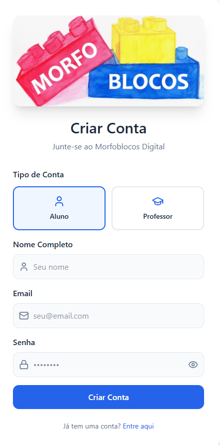
US03 — Recuperação de Senha ❌
US03 - Recuperação de Senha
Como usuário, quero recuperar meu acesso mediante envio de um link de redefinição de senha, para retomar o uso da plataforma caso esqueça minha senha.
Critérios de Aceitação (CA)
- CA-US03-01: O sistema deve enviar um link de redefinição de senha (e não a senha em texto puro) para o e-mail cadastrado do usuário, mediante solicitação na tela de login.
- CA-US03-02: O link de redefinição deve ter validade limitada de no máximo 24 horas e ser invalidado após o primeiro uso, exibindo mensagem específica caso o usuário tente reutilizá-lo RNF04.
Fora do MVP: O frontend de recuperação de senha ficou pendente por problemas de envio de e-mail no servidor de testes. No entanto, devido ao prazo e por estar no Q4 de prioridade (pequeno valor, grande esforço) foi retirada do MVP.
US04 — Cadastro de Morfemas no Catálogo ✅
US04 — Cadastro de Morfemas no Catálogo
Como administrador, quero cadastrar novos morfemas no catálogo do sistema, para disponibilizar os blocos de construção de palavras aos estudantes.
Critérios de Aceitação (CA)
- CA-US04-01: O cadastro de morfema deve exigir os campos obrigatórios: grafia (texto do morfema) e tipo (Prefixo, Radical ou Sufixo), sendo o registro persistido no banco de dados ao confirmar a operação.
Verificação do Definition of Ready (DoR) — US04
| Critério de DoR (Scrum/XP) | Status | Evidência / Link de Rastreabilidade |
|---|---|---|
| A User Story é atômica e clara? | Sim | Escopo restrito à operação de inserção de novos morfemas. |
| Possui Critérios de Aceitação explícitos? | Sim | CA-US04-01 define os campos obrigatórios e o comportamento de persistência. |
| Há rastreabilidade de RNFs e RNs? | Sim | Mapeada para RN03 e RNF05. |
| A prioridade está coerente e justificada? | Sim | Must Have — sem morfemas cadastrados, o jogo de montagem de blocos não possui peças para funcionar. |
| O esforço foi estimado conjuntamente? | Sim | Estimado em 2 Story Points, envolvendo interface de cadastro e integração com a API REST. |
| Resolução de dependências validada? | Sim | Modelo de dados do Morfema e endpoint da API disponíveis antes do início do desenvolvimento. |
Critério de Pronto (DoD V4.0)
| Critério de Pronto (DoD V4.0) | Status | Evidência de Implementação e Qualidade |
|---|---|---|
| 1. Implementação Arquitetural | Concluído | Interface de cadastro de morfemas implementada no painel do professor em React 18+ e TypeScript 5+. |
| 2. Comunicação via API | Concluído | O painel envia o novo morfema via POST para a API REST, persistindo no PostgreSQL 15+ (RNF05). |
| 3. Operações Django Admin | Concluído | Os morfemas cadastrados pela interface são refletidos e auditáveis no painel Django Admin. |
| 4. Validação de CAs | Concluído | CA-US04-01 validado: formulário exige texto e tipo; morfema inserido e exibido na listagem após confirmação. |
| 5. Garantia das RNs | Concluído | RN03 garantida: rota de cadastro exige autenticação com perfil de professor/administrador. |
| 6. Validação de RNFs (RNF11) | Concluído | Interface validada como responsiva em telas a partir de 360px. |
| 7. Integração Contínua (CI) | Concluído | Código integrado ao repositório principal sem falhas na pipeline de CI. |
| 8. Homologação e Validação | Concluído | Funcionalidade testada no ambiente de produção (Vercel) e validada com a cliente (PO). |
Links de Rastreabilidade e Artefatos
Link no site: https://req-2026-1-t01-morfo-blocos-digital.vercel.app/
Fluxo de Acesso:
a. Efetue login com uma conta de Professor.
b. Navegue até o Painel de Conteúdo (aba de gerenciamento).
c. Selecione a aba "Morfemas".
d. Preencha o campo Texto (ex: in) e selecione o tipo no dropdown (Prefixo/Radical/Sufixo).
e. Clique no botão "+ Adicionar" para persistir o morfema no banco de dados.
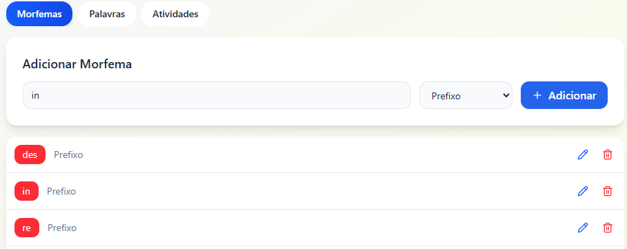
US05 — Edição de Morfemas ✅
US05 — Edição de Morfemas
Como administrador, quero editar morfemas existentes no catálogo, para corrigir grafias, classificações ou cores associadas.
Critérios de Aceitação (CA):
- CA-US05-01: A edição de um morfema deve permitir alterar sua grafia, tipo morfológico e cor associada, refletindo as alterações imediatamente nas próximas atividades que utilizarem esse morfema [RN03, RNF06].
Verificação do Definition of Ready (DoR) — US05
| Critério de DoR (Scrum/XP) | Status | Evidência / Link de Rastreabilidade |
|---|---|---|
| A User Story é atômica e clara? | Sim | Escopo restrito à operação de alteração de atributos de um morfema. |
| Possui Critérios de Aceitação explícitos? | Sim | CA-US05-01 define o carregamento de dados e o comportamento de salvamento. |
| Há rastreabilidade de RNFs e RNs? | Sim | Mapeada para RN03, RNF03, RNF05 e RNF06. |
| A prioridade está coerente e justificada? | Sim | Must Have — essencial para correções de conteúdo sem a necessidade de exclusão. |
| O esforço foi estimado conjuntamente? | Sim | Estimado em 2 Story Points, reaproveitando a estrutura do frontend. |
| Resolução de dependências validada? | Sim | Interface gráfica e endpoint PUT/PATCH da API mapeados. |
Critério de Pronto (DoD V4.0)
| Critério de Pronto (DoD V4.0) | Status | Evidência de Implementação e Qualidade |
|---|---|---|
| 1. Implementação Arquitetural | Concluído | Tela de formulário implementada em React/TypeScript com preenchimento reativo dos dados atuais do morfema selecionado. |
| 2. Comunicação via API | Concluído | O envio do formulário dispara uma requisição PUT/PATCH para a API REST, atualizando o PostgreSQL 15+ (RNF05). |
| 3. Ambiente de Produção | Concluído | A edição é realizada e refletida diretamente na interface unificada do sistema via ambiente Vercel (RNF06). |
| 4. Validação de CAs | Concluído | CA-US05-01 validado: campos carregam dados prévios e salvamento atualiza as telas dos estudantes em tempo real. |
| 5. Garantia das RNs | Concluído | RN03 garantida: rota de edição exige autenticação com perfil de professor/administrador. |
| 6. Validação de RNFs (RNF11) | Concluído | Interface validada como responsiva em telas a partir de 360px. |
| 7. Integração Contínua (CI) | Concluído | Código integrado ao repositório principal sem falhas na pipeline de CI. |
| 8. Homologação e Validação | Concluído | Funcionalidade testada no ambiente de produção (Vercel) e validada com a cliente (PO). |
Links de Rastreabilidade e Artefatos
Link no site: https://req-2026-1-t01-morfo-blocos-digital.vercel.app/
Fluxo de Acesso:
a. Efetue login com uma conta de Professor.
b. Navegue até o Painel de Conteúdo (aba de gerenciamento).
c. Selecione a aba "Morfemas".
d. Localize na listagem o morfema a ser editado e clique no botão/ícone de edição.
e. Altere os campos necessários no formulário e clique em "Salvar" para persistir as modificações.
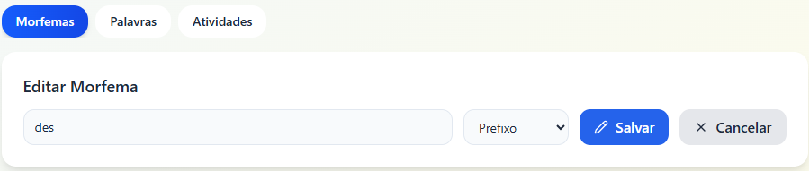
US06 — Remoção de Morfemas ✅
US06 — Remoção de Morfemas
Como administrador, quero remover morfemas do catálogo do sistema, para retirar blocos que não devem mais estar disponíveis aos estudantes.
Critérios de Aceitação (CA)
- CA-US06-01: O sistema deve exibir a listagem de morfemas cadastrados com opção de remoção individual via ícone de lixeira, sendo o registro excluído do banco de dados ao confirmar a operação.
Verificação do Definition of Ready (DoR) — US06
| Critério de DoR (Scrum/XP) | Status | Evidência / Link de Rastreabilidade |
|---|---|---|
| A User Story é atômica e clara? | Sim | Escopo restrito à operação de remoção. |
| Possui Critérios de Aceitação explícitos? | Sim | CA-US06-01 define a exibição da listagem e o mecanismo de remoção por ícone de lixeira. |
| Há rastreabilidade de RNFs e RNs? | Sim | Mapeada para RN03 e RNF05. |
| A prioridade está coerente e justificada? | Sim | Must Have — necessário para manter o catálogo atualizado e íntegro. |
| O esforço foi estimado conjuntamente? | Sim | Estimado em 1 Story Point, aproveitando a mesma interface da US04. |
| Resolução de dependências validada? | Sim | Listagem e endpoint de exclusão da API disponíveis antes do desenvolvimento. |
Critério de Pronto (DoD V4.0)
| Critério de Pronto (DoD V4.0) | Status | Evidência de Implementação e Qualidade |
|---|---|---|
| 1. Implementação Arquitetural | Concluído | Listagem de morfemas com ícone de lixeira implementada no painel do professor em React 18+ e TypeScript 5+. |
| 2. Comunicação via API | Concluído | O clique no ícone de lixeira dispara uma requisição DELETE para a API REST, removendo do PostgreSQL 15+ (RNF05). |
| 3. Operações Django Admin | Concluído | A remoção é refletida imediatamente no Django Admin após a exclusão pela interface. |
| 4. Validação de CAs | Concluído | CA-US06-01 validado: listagem exibe morfemas com lixeira; ao clicar, morfema removido da lista e do banco. |
| 5. Garantia das RNs | Concluído | RN03 garantida: rota de exclusão exige autenticação com perfil de professor/administrador. |
| 6. Validação de RNFs (RNF11) | Concluído | Interface validada como responsiva em telas a partir de 360px. |
| 7. Integração Contínua (CI) | Concluído | Código integrado ao repositório principal sem falhas na pipeline de CI. |
| 8. Homologação e Validação | Concluído | Funcionalidade testada no ambiente de produção (Vercel) e validada com a cliente (PO). |
Links de Rastreabilidade e Artefatos
Link no site: https://req-2026-1-t01-morfo-blocos-digital.vercel.app/
Fluxo de Acesso:
a. Efetue login com uma conta de Professor.
b. Navegue até o Painel de Conteúdo (aba de gerenciamento).
c. Selecione a aba "Morfemas".
d. Localize na listagem o morfema a ser removido.
e. Clique no ícone de lixeira (vermelho) ao lado do registro para excluí-lo do banco de dados.
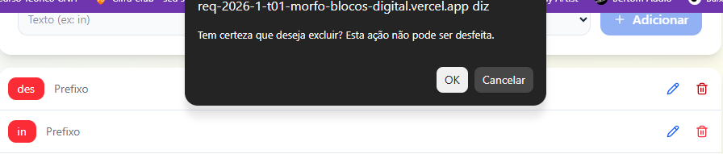
US07 — Listagem de Morfemas ✅
US07 — Listagem de Morfemas
Como administrador, quero listar os morfemas cadastrados, para consultar o conteúdo atual do catálogo.
Critérios de Aceitação (CA)
- CA-US07-01: A listagem deve exibir, no mínimo, a grafia do morfema, seu tipo morfológico e a cor associada, permitindo ordenação e busca textual por grafia RNF06.
Verificação do Definition of Ready (DoR) — US07
| Critério de DoR (Scrum/XP) | Status | Evidência / Link de Rastreabilidade |
|---|---|---|
| A User Story é atômica e clara? | Sim | Escopo restrito à exibição e filtragem do catálogo de morfemas. |
| Possui Critérios de Aceitação explícitos? | Sim | CA-US07-01 detalha os campos obrigatórios e ferramentas de busca. |
| Há rastreabilidade de RNFs e RNs? | Sim | Mapeada para RF07, RNF03, RNF06 e RNF11. |
| A prioridade está coerente e justificada? | Sim | Must Have — base para a gerência, edição e exclusão de morfemas. |
| O esforço foi estimado conjuntamente? | Sim | Estimado em 1 Story Point por envolver leitura e renderização de dados. |
| Resolução de dependências validada? | Sim | Endpoint GET de morfemas estruturado e testado no backend. |
Critério de Pronto (DoD V4.0)
| Critério de Pronto (DoD V4.0) | Status | Evidência de Implementação e Qualidade |
|---|---|---|
| 1. Implementação Arquitetural | Concluído | Grid/tabela de blocos renderizada no React com a devida identificação visual de cor por tipo (RNF07). |
| 2. Comunicação via API | Concluído | Interface consome o endpoint GET de morfemas populando a tabela de forma dinâmica (RNF05). |
| 3. Ambiente de Produção | Concluído | Listagem disponibilizada no painel administrativo hospedado na Vercel (RNF06). |
| 4. Validação de CAs | Concluído | CA-US07-01 validado: listagem exibe todos os atributos; busca e filtros refinam os dados instantaneamente. |
| 5. Garantia das RNs | Concluído | Acesso restrito a usuários autenticados com nível de permissão adequado. |
| 6. Validação de RNFs (RNF11) | Concluído | Filtros e tabela testados em ambiente mobile (360px) garantindo empilhamento e vedação de scroll horizontal. |
| 7. Integração Contínua (CI) | Concluído | Código integrado ao repositório principal sem falhas na pipeline de CI. |
| 8. Homologação e Validação | Concluído | Performance de busca e filtros validada abaixo do limite de 2 segundos (RNF03) em produção na Vercel. |
Links de Rastreabilidade e Artefatos
Link no site: https://req-2026-1-t01-morfo-blocos-digital.vercel.app/
Fluxo de Acesso:
a. Efetue login com uma conta de Professor.
b. Navegue até o Painel de Conteúdo (aba de gerenciamento).
c. Selecione a aba "Morfemas" para visualizar a listagem completa.
d. Utilize a barra de pesquisa ou os filtros por tipo para refinar os blocos exibidos.
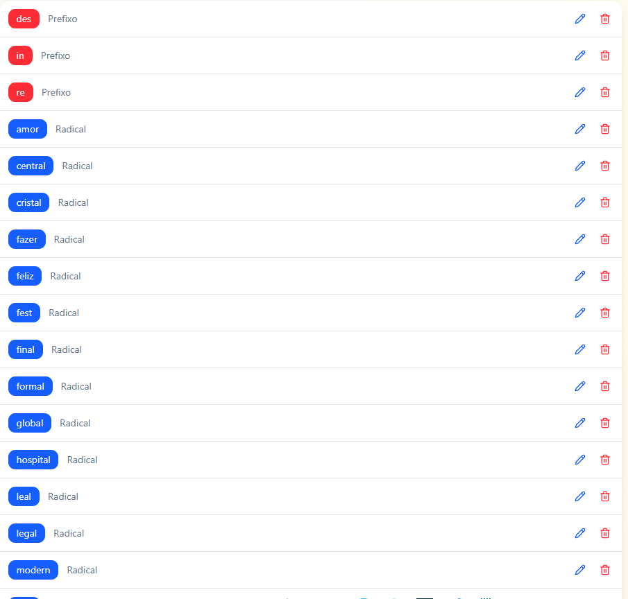
US08 — Cadastro de Palavras Válidas ✅
US08 — Cadastro de Palavras Válidas
Como administrador, quero cadastrar palavras válidas no catálogo do sistema, para definir as combinações de morfemas reconhecidas pelo validador.
Critérios de Aceitação (CA)
- CA-US08-01: O cadastro deve exigir os campos obrigatórios: grafia da palavra e processo morfológico associado (ex: in + feliz + mente), sendo o registro persistido no banco de dados ao confirmar a operação.
Verificação do Definition of Ready (DoR) — US08
| Critério de DoR (Scrum/XP) | Status | Evidência / Link de Rastreabilidade |
|---|---|---|
| A User Story é atômica e clara? | Sim | Escopo restrito à inserção de palavras válidas. |
| Possui Critérios de Aceitação explícitos? | Sim | CA-US08-01 define os campos obrigatórios e o comportamento de persistência. |
| Há rastreabilidade de RNFs e RNs? | Sim | Mapeada para RN03, RN04 e RNF05. |
| A prioridade está coerente e justificada? | Sim | Must Have — sem palavras cadastradas, o validador morfológico não possui base de consulta. |
| O esforço foi estimado conjuntamente? | Sim | Estimado em 2 Story Points, envolvendo dois campos de entrada e integração com a API. |
| Resolução de dependências validada? | Sim | Modelo PalavraValida e endpoint da API disponíveis antes do início do desenvolvimento. |
Critério de Pronto (DoD V4.0)
| Critério de Pronto (DoD V4.0) | Status | Evidência de Implementação e Qualidade |
|---|---|---|
| 1. Implementação Arquitetural | Concluído | Interface de cadastro de palavras válidas implementada no painel do professor em React 18+ e TypeScript 5+. |
| 2. Comunicação via API | Concluído | O painel envia a nova palavra via POST para a API REST, persistindo no PostgreSQL 15+ (RNF05). |
| 3. Operações Django Admin | Concluído | As palavras cadastradas pela interface são refletidas e auditáveis no Django Admin. |
| 4. Validação de CAs | Concluído | CA-US08-01 validado: formulário exige grafia e processo morfológico; registro inserido e exibido na listagem. |
| 5. Garantia das RNs | Concluído | RN03 e RN04 garantidas: acesso restrito ao professor e validador consulta exclusivamente palavras cadastradas. |
| 6. Validação de RNFs (RNF11) | Concluído | Interface validada como responsiva em telas a partir de 360px. |
| 7. Integração Contínua (CI) | Concluído | Código integrado ao repositório principal sem falhas na pipeline de CI. |
| 8. Homologação e Validação | Concluído | Funcionalidade testada no ambiente de produção (Vercel) e validada com a cliente (PO). |
Links de Rastreabilidade e Artefatos
Link no site: https://req-2026-1-t01-morfo-blocos-digital.vercel.app/
Fluxo de Acesso:
a. Efetue login com uma conta de Professor.
b. Navegue até o Painel de Conteúdo (aba de gerenciamento).
c. Selecione a aba "Palavras".
d. Preencha o campo Palavra (ex: infelizmente) e o campo Processo morfológico (ex: in + feliz + mente).
e. Clique no botão "+ Adicionar" para persistir a palavra válida no banco de dados.
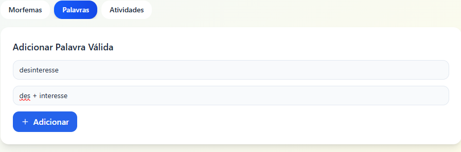
US09 — Edição de Palavras Válidas ✅
US09 — Edição de Palavras Válidas
Como administrador, quero editar palavras válidas existentes, para corrigir registros ou ajustar processos morfológicos associados.
Critérios de Aceitação (CA)
- CA-US09-01: A edição deve permitir alterar a grafia da palavra, sua composição morfológica e a descrição do processo de formação associado, mantendo a consistência das referências utilizadas pelo validador [RN03, RNF06].
Verificação do Definition of Ready (DoR) — US09
| Critério de DoR (Scrum/XP) | Status | Evidência / Link de Rastreabilidade |
|---|---|---|
| A User Story é atômica e clara? | Sim | Escopo restrito à modificação de registros textuais e composições no dicionário de validação. |
| Possui Critérios de Aceitação explícitos? | Sim | CA-US09-01 detalha as permissões e restrições de salvamento. |
| Há rastreabilidade de RNFs e RNs? | Sim | Mapeada para RF09, RN04, RNF05 e RNF06. |
| A prioridade está coerente e justificada? | Sim | Must Have — essencial para refinar as palavras aceitas pelo motor do jogo. |
| O esforço foi estimado conjuntamente? | Sim | Estimado em 2 Story Points dada a necessidade de validação relacional com morfemas. |
| Resolução de dependências validada? | Sim | Depende da existência do catálogo de morfemas populado para associação na edição. |
Critério de Pronto (DoD V4.0)
| Critério de Pronto (DoD V4.0) | Status | Evidência de Implementação e Qualidade |
|---|---|---|
| 1. Implementação Arquitetural | Concluído | Formulário em React/TypeScript implementado com seleção múltipla de morfemas para composição da palavra. |
| 2. Comunicação via API | Concluído | Requisições síncronas REST atualizam as tabelas de composição morfológica diretamente no PostgreSQL (RNF05). |
| 3. Ambiente de Produção | Concluído | Gestão de edição executada via interface gráfica hospedada na Vercel (RNF06). |
| 4. Validação de CAs | Concluído | CA-US09-01 validado: sistema emite erros visuais se a composição violar as regras morfológicas (RN04). |
| 5. Garantia das RNs | Concluído | Garantido que o motor de validação do jogo passa a considerar imediatamente a estrutura atualizada da palavra. |
| 6. Validação de RNFs (RNF11) | Concluído | Interface de edição validada como responsiva em telas móveis. |
| 7. Integração Contínua (CI) | Concluído | Código integrado ao repositório principal sem quebras nas dependências do backend. |
| 8. Homologação e Validação | Concluído | Validado com sucesso em produção na Vercel juntamente com a PO. |
Links de Rastreabilidade e Artefatos
Link no site: https://req-2026-1-t01-morfo-blocos-digital.vercel.app/
Fluxo de Acesso:
a. Efetue login com uma conta de Professor.
b. Navegue até o Painel de Conteúdo (aba de gerenciamento).
c. Selecione a aba "Palavras Válidas".
d. Localize na listagem a palavra desejada e clique em "Editar".
e. Modifique os morfemas vinculados ou o processo formativo e clique em "Salvar".
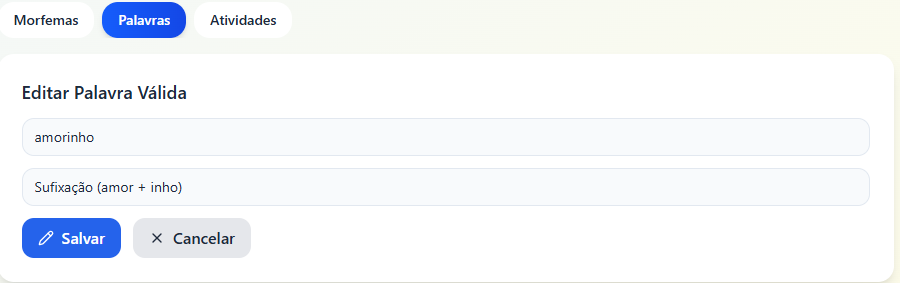
US10 — Remoção de Palavras Válidas ✅
US10 — Remoção de Palavras Válida
Como administrador, quero remover palavras válidas do catálogo do sistema, para retirar registros que não devem mais ser aceitos pelo validador.
Critérios de Aceitação (CA)
• CA-US10-01: O sistema deve exibir a listagem de palavras válidas cadastradas com opção de remoção individual via ícone de lixeira, sendo o registro excluído do banco de dados ao confirmar a operação.
Verificação do Definition of Ready (DoR) — US10
| Critério de DoR (Scrum/XP) | Status | Evidência / Link de Rastreabilidade |
|---|---|---|
| A User Story é atômica e clara? | Sim | Escopo restrito à operação de remoção de palavras válidas. O cadastro foi isolado na US08. |
| Possui Critérios de Aceitação explícitos? | Sim | CA-US10-01 define a listagem e o mecanismo de remoção por ícone de lixeira. |
| Há rastreabilidade de RNFs e RNs? | Sim | Mapeada para RN03 e RNF05. |
| A prioridade está coerente e justificada? | Sim | Must Have — necessário para manter a integridade e atualidade do catálogo do validador. |
| O esforço foi estimado conjuntamente? | Sim | Estimado em 1 Story Point, aproveitando a mesma interface da US08. |
| Resolução de dependências validada? | Sim | Listagem e endpoint de exclusão da API disponíveis antes do desenvolvimento. |
Critério de Pronto (DoD V4.0)
| Critério de Pronto (DoD V4.0) | Status | Evidência de Implementação e Qualidade |
|---|---|---|
| 1. Implementação Arquitetural | Concluído | Listagem de palavras com ícone de lixeira implementada no painel do professor em React 18+ e TypeScript 5+. |
| 2. Comunicação via API | Concluído | O clique no ícone de lixeira dispara uma requisição DELETE para a API REST, removendo do PostgreSQL 15+ (RNF05). |
| 3. Operações Django Admin | Concluído | A remoção é refletida imediatamente no Django Admin após a exclusão pela interface. |
| 4. Validação de CAs | Concluído | CA-US10-01 validado: listagem exibe palavras com lixeira; ao clicar, palavra removida da lista e do banco. |
| 5. Garantia das RNs | Concluído | RN03 garantida: rota de exclusão exige autenticação com perfil de professor/administrador. |
| 6. Validação de RNFs (RNF11) | Concluído | Interface validada como responsiva em telas a partir de 360px. |
| 7. Integração Contínua (CI) | Concluído | Código integrado ao repositório principal sem falhas na pipeline de CI. |
| 8. Homologação e Validação | Concluído | Funcionalidade testada no ambiente de produção (Vercel) e validada com a cliente (PO). |
Links de Rastreabilidade e Artefatos
Link no site: https://req-2026-1-t01-morfo-blocos-digital.vercel.app/
Fluxo de Acesso:
a. Efetue login com uma conta de Professor.
b. Navegue até o Painel de Conteúdo (aba de gerenciamento).
c. Selecione a aba "Palavras".
d. Localize na listagem a palavra a ser removida.
e. Clique no ícone de lixeira (vermelho) ao lado do registro para excluí-la do banco de dados.
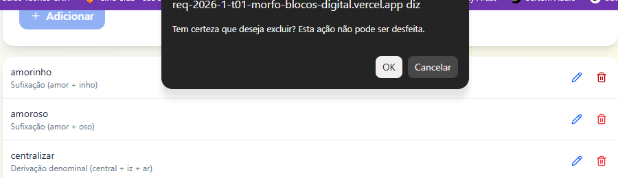
US11 — Listagem de Palavras Válidas ✅
US11 — Listagem de Palavras Válidas
Como administrador, quero listar as palavras válidas cadastradas, para consultar a base utilizada pelo validador morfológico.
Critérios de Aceitação (CA)
- CA-US11-01: A listagem deve exibir, no mínimo, a grafia da palavra, sua composição morfológica e o processo de formação associado, permitindo consulta e busca textual [RNF06].
Verificação do Definition of Ready (DoR) — US11
| Critério de DoR (Scrum/XP) | Status | Evidência / Link de Rastreabilidade |
|---|---|---|
| A User Story é atômica e clara? | Sim | Escopo focado na exibição estruturada do dicionário de palavras. |
| Possui Critérios de Aceitação explícitos? | Sim | CA-US11-01 determina os dados exibidos e o mecanismo de busca. |
| Há rastreabilidade de RNFs e RNs? | Sim | Mapeada para RF11, RNF03 e RNF06. |
| A prioridade está coerente e justificada? | Sim | Must Have — indispensável para auditoria do vocabulário cadastrado. |
| O esforço foi estimado conjuntamente? | Sim | Estimado em 1 Story Point (leitura e renderização simples de tabelas relacionais). |
| Resolução de dependências validada? | Sim | Endpoint de consulta no Django homologado previamente. |
Critério de Pronto (DoD V4.0)
| Critério de Pronto (DoD V4.0) | Status | Evidência de Implementação e Qualidade |
|---|---|---|
| 1. Implementação Arquitetural | Concluído | Tabela em React que renderiza a palavra-chave e expande os morfemas filhos associados de forma hierárquica. |
| 2. Comunicação via API | Concluído | Consumo do endpoint GET de palavras válidas via chamadas REST otimizadas (RNF05). |
| 3. Ambiente de Produção | Concluído | Visualização centralizada no ambiente Vercel dispensando o Django Admin tradicional (RNF06). |
| 4. Validação de CAs | Concluído | CA-US11-01 validado: busca textual localiza palavras instantaneamente com tempo de resposta < 2s (RNF03). |
| 5. Garantia das RNs | Concluído | Filtros e dados protegidos contra acessos não autenticados. |
| 6. Validação de RNFs (RNF11) | Concluído | Tabela adaptada de forma responsiva para visualização fluida em dispositivos móveis. |
| 7. Integração Contínua (CI) | Concluído | Integração sutil realizada no branch principal sem conflitos de layout. |
| 8. Homologação e Validação | Concluído | Homologado em produção sob uma base de testes de alta volumetria de palavras. |
Links de Rastreabilidade e Artefatos
Link no site: https://req-2026-1-t01-morfo-blocos-digital.vercel.app/
Fluxo de Acesso:
a. Efetue login com uma conta de Professor.
b. Navegue até o Painel de Conteúdo.
c. Selecione a aba "Palavras Válidas".
d. Utilize o campo de busca no topo da tabela para pesquisar termos específicos do dicionário.
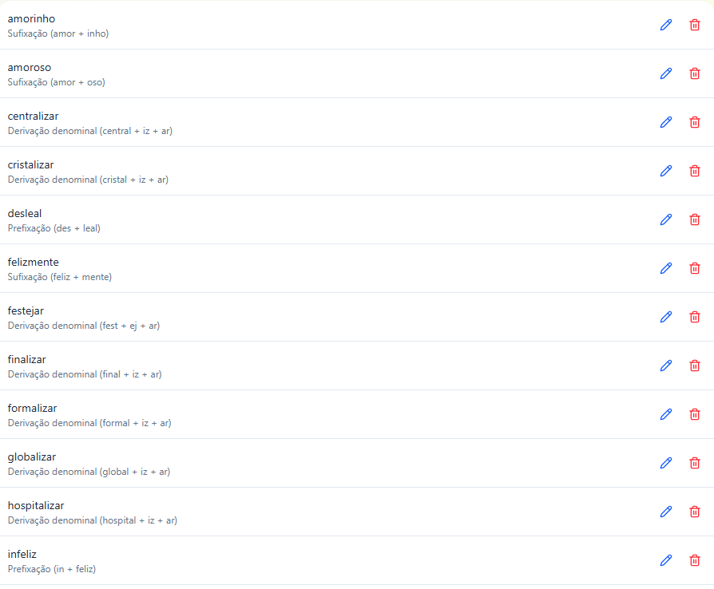
US12 — Cadastro de Atividades Pedagógicas ✅
US12 — Cadastro de Atividades Pedagógicas
Como administrador, quero cadastrar atividades pedagógicas no sistema, para disponibilizar exercícios aos estudantes.
Critérios de Aceitação (CA)
• CA-US12-01: O cadastro de atividade deve exigir os campos obrigatórios: título, tipo (Quiz ou Montagem) e nível de dificuldade, permitindo ainda a definição de perguntas com alternativas para atividades do tipo Quiz.
Verificação do Definition of Ready (DoR) — US12
| Critério de DoR (Scrum/XP) | Status | Evidência / Link de Rastreabilidade |
|---|---|---|
| A User Story é atômica e clara? | Sim | Escopo restrito à criação de atividades pedagógicas com suas perguntas. A remoção foi isolada na US14. |
| Possui Critérios de Aceitação explícitos? | Sim | CA-US12-01 define campos obrigatórios e suporte a perguntas com alternativas para o tipo Quiz. |
| Há rastreabilidade de RNFs e RNs? | Sim | Mapeada para RN03 e RNF05. |
| A prioridade está coerente e justificada? | Sim | Must Have — sem atividades cadastradas, os estudantes não têm exercícios disponíveis na plataforma. |
| O esforço foi estimado conjuntamente? | Sim | Estimado em 3 Story Points por envolver formulário dinâmico com perguntas e alternativas. |
| Resolução de dependências validada? | Sim | Modelos de atividade e perguntas e endpoints disponíveis antes do desenvolvimento. |
Critério de Pronto (DoD V4.0)
| Critério de Pronto (DoD V4.0) | Status | Evidência de Implementação e Qualidade |
|---|---|---|
| 1. Implementação Arquitetural | Concluído | Interface de cadastro de atividades implementada no painel do professor em React 18+ e TypeScript 5+, com formulário dinâmico de perguntas. |
| 2. Comunicação via API | Concluído | O painel envia a atividade completa (título, tipo, nível e perguntas) via POST para a API REST, persistindo no PostgreSQL 15+ (RNF05). |
| 3. Operações Django Admin | Concluído | As atividades cadastradas são refletidas e auditáveis no Django Admin. |
| 4. Validação de CAs | Concluído | CA-US12-01 validado: formulário exige título, tipo e nível; suporta múltiplas perguntas com 4 alternativas; atividade criada e exibida na listagem. |
| 5. Garantia das RNs | Concluído | RN03 garantida: rota de criação exige autenticação com perfil de professor. |
| 6. Validação de RNFs (RNF11) | Concluído | Interface do formulário validada como responsiva em telas a partir de 360px. |
| 7. Integração Contínua (CI) | Concluído | Código integrado ao repositório principal sem falhas na pipeline de CI. |
| 8. Homologação e Validação | Concluído | Funcionalidade testada no ambiente de produção (Vercel) e validada com a cliente (PO). |
Links de Rastreabilidade e Artefatos
Link no site: https://req-2026-1-t01-morfo-blocos-digital.vercel.app/
Fluxo de Acesso:
a. Efetue login com uma conta de Professor.
b. Navegue até o Painel de Conteúdo (aba de gerenciamento).
c. Selecione a aba "Atividades".
d. Preencha o título, selecione o tipo (Quiz/Montagem) e o nível de dificuldade.
e. Para atividades do tipo Quiz, adicione perguntas clicando em "+ Adicionar pergunta" e preencha o enunciado e as alternativas marcando a correta.
f. Clique em "+ Criar Atividade" para persistir a atividade no banco de dados.
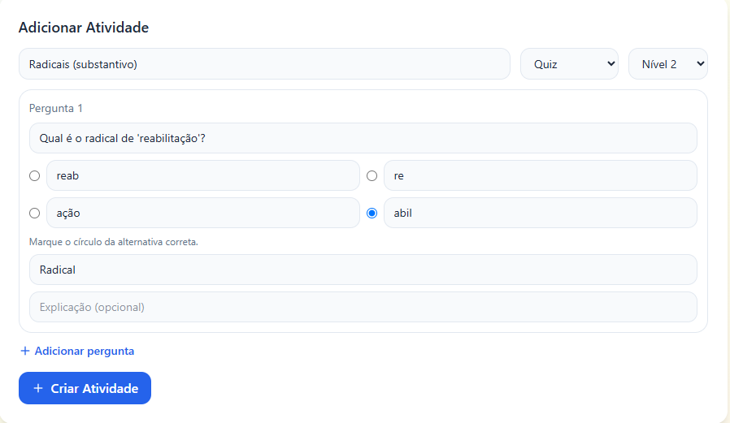
US13 — Edição de Atividades Pedagógicas ✅
US13 — Edição de Atividades Pedagógicas
Como administrador, quero editar atividades pedagógicas existentes no sistema, para corrigir enunciados, níveis de dificuldade ou conjuntos de morfemas associados.
Critérios de Aceitação (CA)
- CA-US13-01: A edição deve permitir alterar título, nível de dificuldade, conjunto de morfemas disponíveis e pontuação mínima para progressão, preservando o histórico das execuções já realizadas [RN03, RNF06, RNF08].
Verificação do Definition of Ready (DoR) — US13
| Critério de DoR (Scrum/XP) | Status | Evidência / Link de Rastreabilidade |
|---|---|---|
| A User Story é atômica e clara? | Sim | Escopo isolado para modificação de metadados e blocos vinculados a um exercício. |
| Possui Critérios de Aceitação explícitos? | Sim | CA-US13-01 protege os dados históricos e impõem regras de vinculação. |
| Há rastreabilidade de RNFs e RNs? | Sim | Mapeada para RF13, RN03, RN08 e RNF06. |
| A prioridade está coerente e justificada? | Sim | Must Have — necessária para o ajuste dinâmico das missões com base no feedback da turma. |
| O esforço foi estimado conjuntamente? | Sim | Estimado em 3 Story Points devido à complexidade de integridade do histórico e chaves estrangeiras. |
| Resolução de dependências validada? | Sim | Validada a não interferência nas tabelas de progresso e tentativas antigas. |
Critério de Pronto (DoD V4.0)
| Critério de Pronto (DoD V4.0) | Status | Evidência de Implementação e Qualidade |
|---|---|---|
| 1. Implementação Arquitetural | Concluído | Painel de edição em React 18+ contemplando a atualização de enunciados, dificuldades e banco de morfemas disponíveis. |
| 2. Comunicação via API | Concluído | Uso de requisições REST via HTTPS utilizando tokens JWT para autenticar o perfil administrativo (RNF14). |
| 3. Ambiente de Produção | Concluído | Funcionalidade plenamente operacional no frontend unificado via Vercel (RNF06). |
| 4. Validação de CAs | Concluído | CA-US13-01 validado: bloqueio de salvamento caso nenhum morfema seja selecionado; dados históricos blindados. |
| 5. Garantia das RNs | Concluído | Garantia das RN03 e RN08: verificado via Code Review o isolamento total das notas históricas já calculadas dos alunos. |
| 6. Validação de RNFs (RNF11) | Concluído | Formulários e caixas de seleção múltipla responsivos em telas a partir de 360px. |
| 7. Integração Contínua (CI) | Concluído | Testes automatizados cobrindo a integridade do banco de dados executados com sucesso no pipeline de CI. |
| 8. Homologação e Validação | Concluído | Módulo homologado e validado de ponta a ponta em produção junto à Profª Pilar. |
Links de Rastreabilidade e Artefatos
Link no site: https://req-2026-1-t01-morfo-blocos-digital.vercel.app/
Fluxo de Acesso:
a. Efetue login com uma conta de Professor.
b. Acesse o Painel de Controle de Atividades.
c. Na lista de exercícios, clique em "Editar" ao lado da atividade desejada.
d. Modifique os campos textuais, ajuste o nível ou o banco de blocos e clique em "Salvar Alterações".
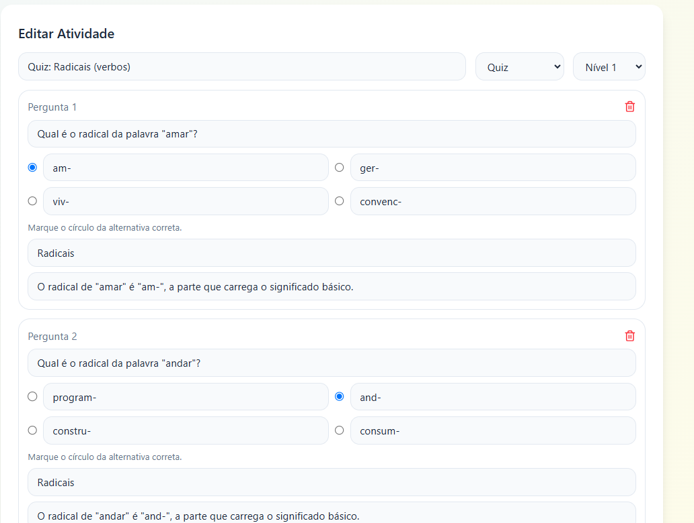
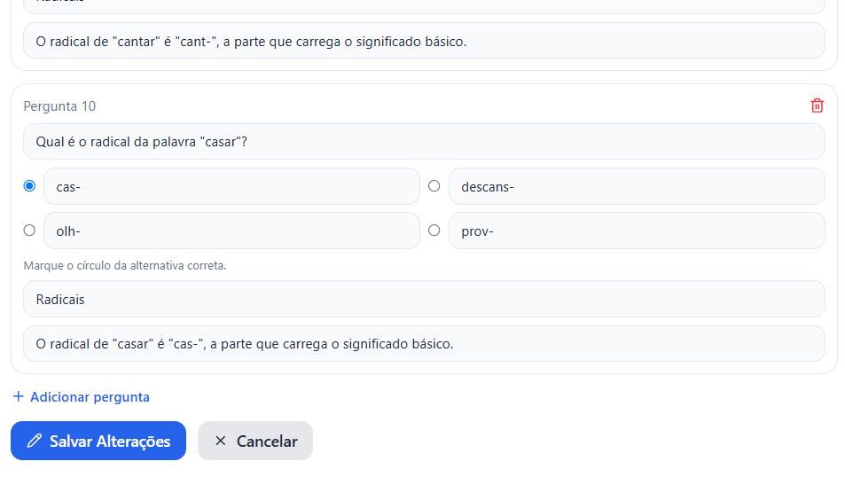
US14 — Remoção de Atividades Pedagógicas ✅
US14 — Remoção de Atividades Pedagógicas
Como administrador, quero remover atividades pedagógicas do sistema, para* retirar exercícios que não devem mais estar disponíveis aos estudantes.
Critérios de Aceitação (CA)
- CA-US14-01: O sistema deve exibir a listagem de atividades cadastradas com opção de remoção individual via ícone de lixeira, sendo o registro excluído do banco de dados ao confirmar a operação.
Verificação do Definition of Ready (DoR) — US14
| Critério de DoR (Scrum/XP) | Status | Evidência / Link de Rastreabilidade |
|---|---|---|
| A User Story é atômica e clara? | Sim | Escopo restrito à operação de remoção de atividades. O cadastro foi isolado na US12. |
| Possui Critérios de Aceitação explícitos? | Sim | CA-US14-01 define a listagem e o mecanismo de remoção por ícone de lixeira. |
| Há rastreabilidade de RNFs e RNs? | Sim | Mapeada para RN03 e RNF05. |
| A prioridade está coerente e justificada? | Sim | Must Have — necessário para o ciclo de vida das atividades na plataforma. |
| O esforço foi estimado conjuntamente? | Sim | Estimado em 1 Story Point, aproveitando a mesma interface da US12. |
| Resolução de dependências validada? | Sim | Listagem e endpoint de exclusão disponíveis antes do desenvolvimento. |
Critério de Pronto (DoD V4.0)
| Critério de Pronto (DoD V4.0) | Status | Evidência de Implementação e Qualidade |
|---|---|---|
| 1. Implementação Arquitetural | Concluído | Listagem de atividades com ícone de lixeira implementada no painel do professor em React 18+ e TypeScript 5+. |
| 2. Comunicação via API | Concluído | O clique no ícone de lixeira dispara uma requisição DELETE para a API REST, removendo do PostgreSQL 15+ (RNF05). |
| 3. Operações Django Admin | Concluído | A remoção é refletida imediatamente no Django Admin após a exclusão pela interface. |
| 4. Validação de CAs | Concluído | CA-US14-01 validado: listagem exibe atividades com lixeira; ao clicar, atividade removida da lista e do banco. |
| 5. Garantia das RNs | Concluído | RN03 garantida: rota de exclusão exige autenticação com perfil de professor. |
| 6. Validação de RNFs (RNF11) | Concluído | Interface validada como responsiva em telas a partir de 360px. |
| 7. Integração Contínua (CI) | Concluído | Código integrado ao repositório principal sem falhas na pipeline de CI. |
| 8. Homologação e Validação | Concluído | Funcionalidade testada no ambiente de produção (Vercel) e validada com a cliente (PO). |
Links de Rastreabilidade e Artefatos
Link no site: https://req-2026-1-t01-morfo-blocos-digital.vercel.app/
Fluxo de Acesso:
a. Efetue login com uma conta de Professor.
b. Navegue até o Painel de Conteúdo (aba de gerenciamento).
c. Selecione a aba "Atividades".
d. Localize na listagem a atividade a ser removida.
e. Clique no ícone de lixeira (vermelho) ao lado do registro para excluí-la do banco de dados.
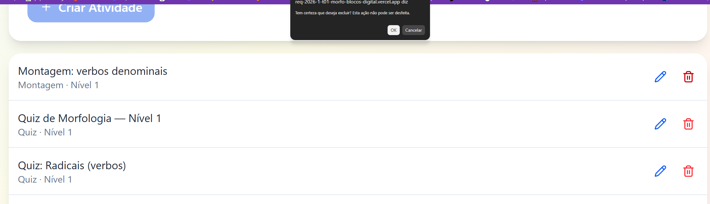
US15 — Listagem de Atividades Pedagógicas ✅
US15 — Listagem de Atividades Pedagógicas
Como administrador, quero listar as atividades cadastradas, para consultar o catálogo de exercícios disponíveis.
Critérios de Aceitação (CA)
- CA-US15-01: A listagem deve exibir, no mínimo, título da atividade, nível de dificuldade e quantidade de morfemas associados, permitindo ordenação e busca textual [RNF06].
Verificação do Definition of Ready (DoR) — US15
| Critério de DoR (Scrum/XP) | Status | Evidência / Link de Rastreabilidade |
|---|---|---|
| A User Story é atômica e clara? | Sim | Escopo focado estritamente na exibição consolidada das atividades criadas. |
| Possui Critérios de Aceitação explícitos? | Sim | CA-US15-01 explicita os metadados visíveis e controles de ordenação. |
| Há rastreabilidade de RNFs e RNs? | Sim | Mapeada para RF15, RNF06, RNF11 e RNF03. |
| A prioridade está coerente e justificada? | Sim | Must Have — ponto de partida para o professor acompanhar o roteiro pedagógico do sistema. |
| O esforço foi estimado conjuntamente? | Sim | Estimado em 1 Story Point (padrão de listagem/cards com paginação simples). |
| Resolução de dependências validada? | Sim | Mapeado o correto relacionamento de contagem entre as tabelas Atividade e Morfema no banco. |
Critério de Pronto (DoD V4.0)
| Critério de Pronto (DoD V4.0) | Status | Evidência de Implementação e Qualidade |
|---|---|---|
| 1. Implementação Arquitetural | Concluído | Cards e linhas de listagem organizados no React 18+ trazendo informações analíticas rápidas de cada lição (RNF07). |
| 2. Comunicação via API | Concluído | Endpoint GET estruturado trazendo paginação reativa via API REST (RNF05). |
| 3. Ambiente de Produção | Concluído | Listagem disponibilizada no ambiente web da Vercel integrado ao fluxo do professor (RNF06). |
| 4. Validação de CAs | Concluído | CA-US15-01 validado: paginação funcional e ordenação por nível de dificuldade executadas sem lentidão. |
| 5. Garantia das RNs | Concluído | Controle de acesso (RBAC) validado para garantir que apenas docentes visualizem as métricas da listagem. |
| 6. Validação de RNFs (RNF11) | Concluído | Alinhamento vertical e tamanho de botões validados para touch em resoluções mobile (360px). |
| 7. Integração Contínua (CI) | Concluído | Mudanças integradas perfeitamente ao repositório master. |
| 8. Homologação e Validação | Concluído | Componente carregando em produção na Vercel com tempo de resposta em conformidade com o RNF03 (< 2s). |
Links de Rastreabilidade e Artefatos
Link no site: https://req-2026-1-t01-morfo-blocos-digital.vercel.app/
Fluxo de Acesso:
a. Efetue login com uma conta de Professor.
b. No menu principal, clique em "Gerenciar Atividades".
c. Visualize a listagem completa, navegue pelas páginas ou mude a ordenação padrão por nível de dificuldade.
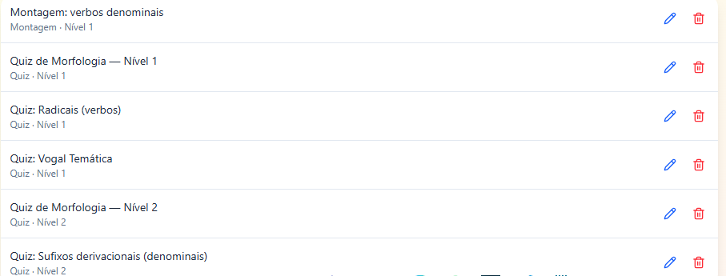
US16 — Atividades Pedagógicas do Tipo Quiz ✅
US16 — Atividades Pedagógicas do Tipo Quiz
- Sprint 4
Como estudante, quero realizar atividades pedagógicas do tipo Quiz, para responder a questões de múltipla escolha sobre conceitos morfológicos teóricos.
Critério de Aceitação (CA)
CA-US16-01: O sistema deve carregar e exibir sequencialmente as perguntas de múltipla escolha associadas a uma atividade pedagógica teórica, computar a resposta selecionada pelo estudante entre as alternativas disponíveis e exibir o feedback imediato ou pontuação final após a conclusão do envio.
| Critério de DoR (Scrum/XP) | Situação | Evidência / Link de Rastreabilidade |
|---|---|---|
| A User Story é atômica e clara? | Sim | O escopo está estritamente focado no consumo, interação e submissão de respostas do Quiz pela visão do estudante. A criação do banco de questões e o gerenciamento das atividades pelo professor foram desacoplados em outras histórias. |
| Possui Critérios de Aceitação explícitos? | Sim | Possui um critério de aceitação (CA-US16-01) explícito e objetivo, que estabelece o fluxo de renderização, captura de clique nas opções de múltipla escolha e computação do resultado. |
| Há rastreabilidade de restrições (RNFs) e Regras de Negócio (RNs)? | Sim | Mapeamento explícito para respeitar a RN01 (Acesso restrito a usuários autenticados), garantindo que apenas estudantes logados pontuem, além de herdar o RNF05 (Comunicação via API REST) e RNF12 (Execução 100% via navegador). |
| A prioridade está coerente e justificada? | Sim | Classificada como Must Have via matriz MoSCoW, pois o Quiz teórico compõe um dos dois pilares fundamentais de engajamento pedagógico do MVP do sistema. |
| O esforço foi estimado conjuntamente? | Sim | Por envolver controle de estado local e cálculo de acertos, o time de engenharia pontuou a história em 3 Story Points. |
| Resolução de dependências validada? | Sim | O contrato da API que entrega a estrutura do Quiz foi previamente validado e o layout dos cartões de pergunta homologado pela PO. |
| Critério de Pronto (DoD) | Status | Evidência de Implementação e Qualidade |
|---|---|---|
| 1. Implementação Arquitetural | Concluído | Telas de renderização de perguntas e controle de estado local de respostas construídas em React 18+ e TypeScript 5+. |
| 2. Comunicação via API | Concluído | O front-end captura dinamicamente a estrutura de questões de múltipla escolha e alternativas via requisições à API REST (RNF05). |
| 3. Operações Django Admin | Concluído | O banco de questões, textos e alternativas corretas do Quiz são mantidos e populados via painel administrativo do Django. |
| 4. Validação de CAs | Concluído | O critério CA-US16-01 foi testado com sucesso: o sistema exibe perguntas sequenciais, captura cliques e computa o feedback imediato/pontuação. |
| 5. Garantia das RNs | Concluído | Atendimento estrito à RN01; o sistema exige autenticação ativa via token e vincula a pontuação final unicamente ao perfil do estudante logado. |
| 6. Validação de RNFs (RNF11) | Concluído | Os blocos de múltipla escolha e os cartões de pergunta foram validados em resolução mobile (360px) e executam 100% via navegador (RNF12). |
| 7. Integração Contínua (CI) | Concluído | Código integrado à branch principal, com build automatizado executado com sucesso. |
| 8. Homologação & Validação | Concluído | Sistema operando de forma estável no link de produção da Vercel, homologado pelo fluxo de acesso e validado junto à cliente (PO). |
Links de Rastreabilidade e Artefatos
Link no site: https://req-2026-1-t01-morfo-blocos-digital.vercel.app/
Fluxo de Acesso:
a. Efetue login no sistema com uma conta ativa de Estudante.
b. Na dashboard inicial, localize e selecione um exercício rotulado como "Responder Perguntas".
c. Responda sequencialmente às questões de múltipla escolha clicando nas alternativas desejadas.
d. Clique no botão de envio para submeter as respostas e visualizar o resultado final.
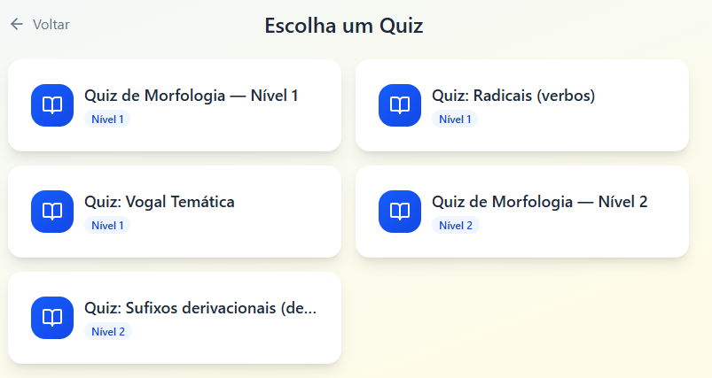
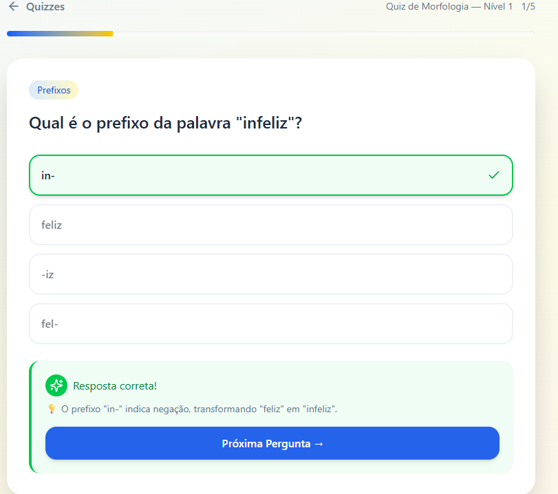
US17 — Atividades Pedagógicas de Montagem de Palavras (Interface) ✅
US17 — Atividades Pedagógicas de Montagem de Palavras (Interface)
- Sprint 4
Como estudante, quero realizar atividades pedagógicas de montagem de palavras, manipulando os blocos na tela, para formar palavras e submetê-las para a validação.
Critério de Aceitação (CA)
- CA-US17-01: O estudante consegue arrastar, soltar e reordenar livremente os blocos de morfemas na área de construção usando o toque (mobile) ou o rato/mouse.
- CA-US17-02: O botão de "Enviar Resposta" só fica ativo e clicável se houver pelo menos um bloco posicionado na área de montagem.
- CA-US17-04: A área de construção e os blocos de morfemas devem adaptar-se dinamicamente ao limite mínimo de 360px de largura. Os blocos devem empilhar-se ou redimensionar-se automaticamente, sendo expressamente proibido que fiquem cortados ou forcem uma barra de rolagem horizontal.
Verificação do Definition of Ready (DoR) — US17
| Critério de DoR (Scrum/XP) | Situação | Evidência / Link de Rastreabilidade |
|---|---|---|
| A User Story é atômica e clara? | Sim | O escopo está focado exclusivamente na mecânica de arrastar, soltar e ordenar os blocos na interface gráfica. A validação linguística da palavra montada foi isolada em outra história do motor de regras. |
| Possui Critérios de Aceitação explícitos? | Sim | Possui os critérios CA-US17-01, CA-US17-02 e CA-US17-04 detalhando o comportamento físico dos blocos. |
| Há rastreabilidade de restrições (RNFs) e Regras de Negócio (RNs)? | Sim | Mapeamento estrutural homologado para a RN01 e RNF12. O bloqueio anterior do RNF11 foi totalmente sanado através da refatoração do container da mesa de trabalho. |
| A prioridade está coerente e justificada? | Sim | Classificada como Must Have via matriz MoSCoW, pois representa o núcleo da experiência de jogabilidade e o principal diferencial pedagógico do sistema. |
| O esforço foi estimado conjuntamente? | Sim | Por exigir manipulação complexa de elementos de interface, a equipe de engenharia pontuou a história em 5 Story Points. |
| Resolução de dependências validada? | Sim | O contrato técnico para carregar o catálogo de morfemas necessários para o tabuleiro já estava fechado. |
| Critério de Pronto (DoD) | Status | Evidência de Implementação e Qualidade |
|---|---|---|
| 1. Implementação Arquitetural | Concluído | Mesa de trabalho desenvolvida em React 18+ com suporte nativo a eventos de mouse e gestos de toque em dispositivos móveis. |
| 2. Comunicação via API | Concluído | O catálogo de morfemas é alimentado e renderizado na tela dinamicamente via requisições HTTP para a API REST (RNF05). |
| 3. Operações Django Admin | Concluído | A base de blocos, morfemas e suas propriedades pedagógicas são gerenciadas e armazenadas através da retaguarda administrativa do Django. |
| 4. Validação de CAs | Concluído | Critérios CA-US17-01 e CA-US17-02 validados: os blocos movem-se livremente e o botão de envio trava se a área de construção estiver vazia. |
| 5. Garantia das RNs | Concluído | Garante o cumprimento da RN01, protegendo o estado do tabuleiro de jogo e limitando o uso apenas a estudantes devidamente autenticados. |
| 6. Validação de RNFs (RNF11) | Concluído | Resolvido: O container foi refatorado com flexbox adaptativo. Os blocos empilham-se automaticamente em 360px sem sofrer cortes ou forçar scroll lateral (CA-US17-04). |
| 7. Integração Contínua (CI) | Concluído | Código integrado com sucesso ao repositório principal, superando os testes de regressão visual sem quebrar as folhas de estilo globais. |
| 8. Homologação & Validação | Concluído | Interface homologada no ambiente móvel da Vercel através do fluxo de acesso e validada formalmente com a cliente (PO). |
Links de Rastreabilidade e Artefatos
Link no site: https://req-2026-1-t01-morfo-blocos-digital.vercel.app/
Fluxo de Acesso:
a. Efetue login no sistema com uma conta ativa de Estudante.
b. Na dashboard inicial, clique em um exercício do tipo "Junção de Blocos".
c. Visualize o tabuleiro interativo e os blocos de morfemas disponíveis na base da tela.
d. Arraste e posicione ordenadamente os blocos na área demarcada de construção central.
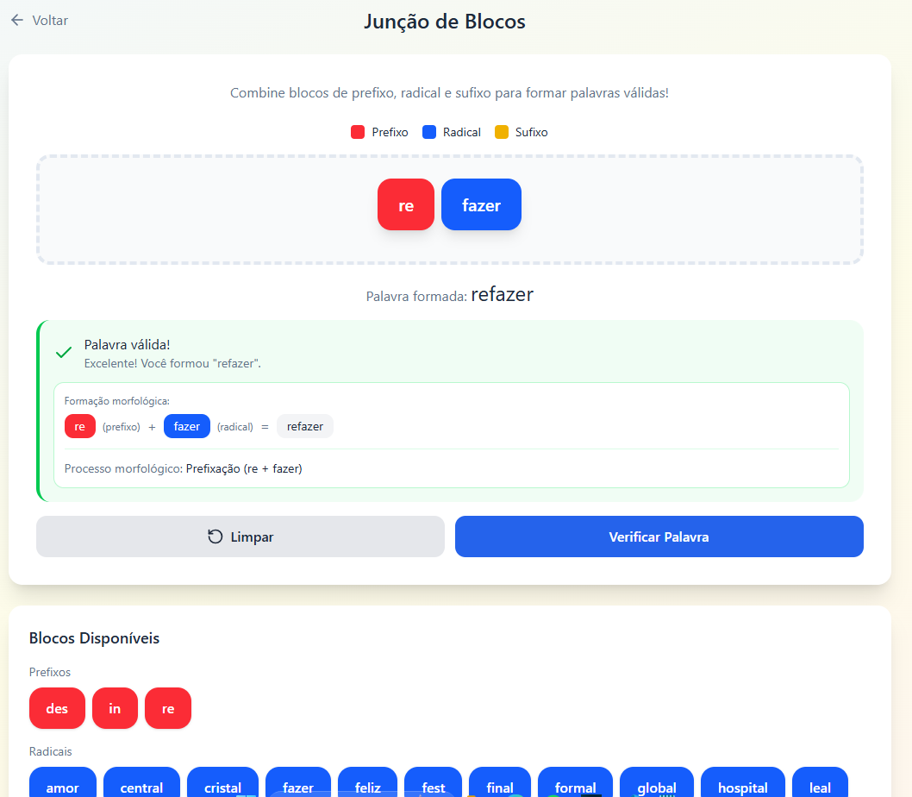
US18 - Consulta de Conteúdos Morfológicos ✅
US18 - Consulta de Conteúdos Morfológicos
- Sprint 4
Como estudante, quero consultar explicações sobre conteúdos morfológicos relacionados às atividades, para aprender enquanto pratico.
Critério de Aceitação (CA)
- CA-US18-01: O sistema deve fornecer uma aba ou janela modal com textos explicativos rápidos sobre a matéria da questão atual, acessíveis diretamente na tela sem reiniciar ou apagar o progresso da atividade.
| Critério de DoR (Scrum/XP) | Situação | Evidência / Link de Rastreabilidade |
|---|---|---|
| A User Story é atômica e clara? | Sim | O escopo está focado exclusivamente na exibição de conteúdo de apoio teórico sob demanda. A interface visual de arrastar os blocos foi mantida isolada na US17. |
| Possui Critérios de Aceitação explícitos? | Sim | Possui um critério de aceitação (CA-US18-01) focado no comportamento do modal de ajuda sem perda de estado local. |
| Há rastreabilidade de restrições (RNFs) e Regras de Negócio (RNs)? | Sim | Mapeamento direto para consumo assíncrono e suporte fluido em telas responsivas. |
| Resolução de dependências validada? | Sim | Depende diretamente da existência da base populada via retaguarda. Os contratos de entrada e saída foram definidos. |
| Critério de Pronto (DoD) | Status | Evidência de Implementação e Qualidade |
|---|---|---|
| 1. Implementação Arquitetural | Concluído | Interface da janela suspensa (modal) desenvolvida em React 18+ e TypeScript 5+ de forma isolada e acoplável às atividades. |
| 2. Comunicação via API | Concluído | O conteúdo teórico e os textos explicativos rápidos são consumidos dinamicamente da API REST com base na matéria selecionada (RNF05). |
| 3. Operações Django Admin | Concluído | O dicionário de conteúdos morfológicos e as explicações conceituais são cadastrados e atualizados via painel administrativo do Django. |
| 4. Validação de CAs | Concluído | Critério CA-US18-01 validado com sucesso: a modal abre e fecha sobre a tela atual sem reiniciar o progresso ou apagar as peças da atividade. |
| 5. Garantia das RNs | Concluído | Preserva o fluxo pedagógico sem quebras de regras de integridade de dados. |
| 6. Validação de RNFs (RNF11) | Concluído | A modal de explicação foi otimizada com rolagem interna vertical, adaptando-se perfeitamente em telas móveis de 360px de largura. |
| 7. Integração Contínua (CI) | Concluído | Código integrado à branch principal sem gerar vazamentos de memória ou falhas de compilação na esteira de build automatizado. |
| 8. Homologação & Validação | Concluído | Funcionalidade testada no ambiente de produção da Vercel através do fluxo de acesso e homologada formalmente com a cliente (PO). |
Links de Rastreabilidade e Artefatos
Link no site: https://req-2026-1-t01-morfo-blocos-digital.vercel.app/
Fluxo de Acesso:
a. Efetue login no sistema com uma conta ativa de Estudante.
b. Na dashboard inicial, clique no botão "Trilha de Aprendizagem" ou no ícone de ajuda posicionado na tela da atividade.
c. Inspecione os textos explicativos rápidos sobre a matéria dentro da janela.
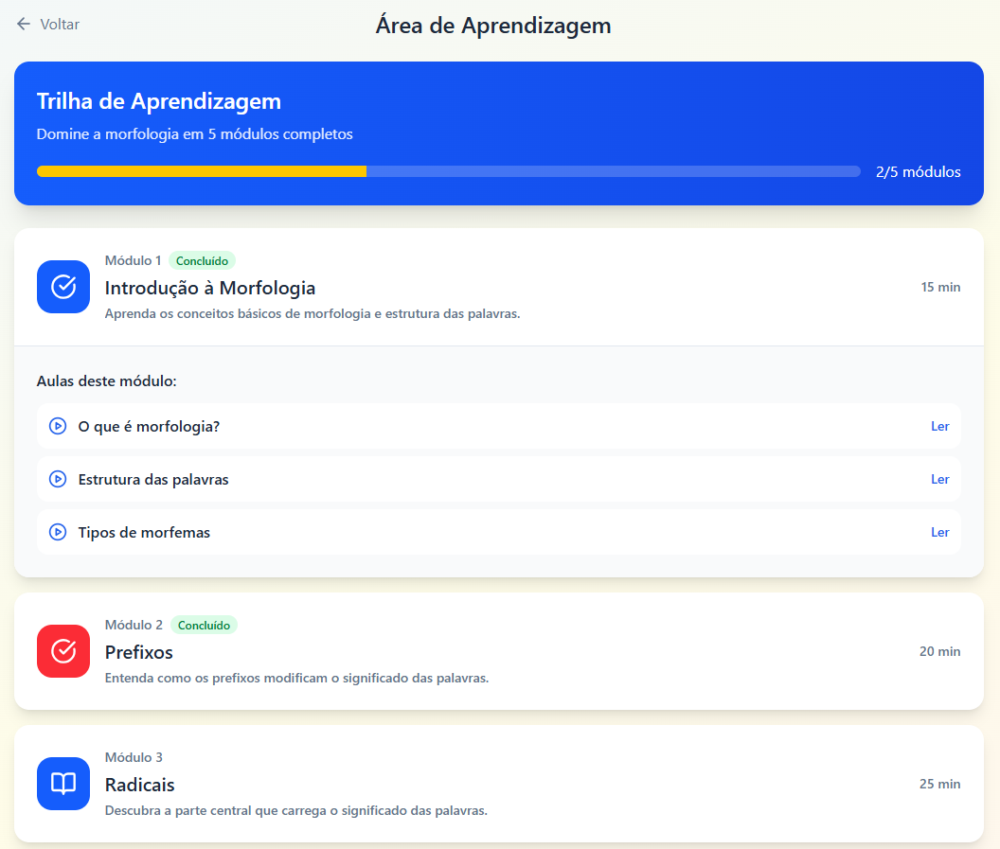
US19 — Resultado da Validação ✅
US19 — Resultado da Validação
Como estudante, quero consultar o resultado da validação da combinação de blocos submetida, para saber se acertei a estrutura da palavra.
Critério de Aceitação (CA)
- CA-US19-01: O motor do sistema testa a sequência de blocos enviada contra o banco de dados de palavras válidas e exibe um feedback instantâneo e claro de "Palavra Válida" ou "Palavra Inválida".
| Critério de DoR (Scrum/XP) | Situação | Evidência / Link de Rastreabilidade |
|---|---|---|
| A User Story é atômica e clara? | Sim | Escopo exclusivo para a conferência algorítmica de acertos e erros e o retorno imediato do veredito. |
| Possui Critérios de Aceitação explícitos? | Sim | Vinculada ao critério essencial CA-US19-01. |
| Há rastreabilidade de restrições (RNFs)? | Sim | Rastreia a integração síncrona com o dicionário de dados e tempo de resposta ágil. |
| A prioridade está coerente e justificada? | Sim | Must Have. Peça chave para o funcionamento lógico do validador. |
| O esforço foi estimado conjuntamente? | Sim | Estimado em 3 Story Points devido ao casamento de strings das sequências montadas. |
| Resolução de dependências validada? | Sim | Base de dados contendo palavras cadastradas e ordenadas validada para testes. |
| Critério de Pronto (DoD V4.0) | Status | Evidência de Implementação e Qualidade |
|---|---|---|
| 1. Implementação Arquitetural | Concluído | Rotas de validação síncronas implementadas com buscas otimizadas no banco de dados relacional PostgreSQL 15+. |
| 2. Comunicação via API | Concluído | O front-end envia o arranjo de blocos montados e recebe imediatamente a resposta booleana estruturada da API REST (RNF05). |
| 3. Operações Django Admin | Concluído | O cadastro de sequências morfológicas e palavras consideradas válidas para os testes é realizado na retaguarda do Django Admin. |
| 4. Validação de CAs | Concluído | Critério CA-US19-01 validado: o motor testa a sequência enviada contra o banco de dados e emite o aviso instantâneo de "Palavra Válida" ou "Palavra Inválida". |
| 5. Garantia das RNs | Concluído | Execução direta da RN05; a combinação enviada pelo estudante autenticado só é aceita se constar rigorosamente no dicionário do sistema. |
| 6. Validação de RNFs (RNF11) | Concluído | O banner visual e as mensagens de feedback de acerto ou erro foram estilizados de forma fluida, sem estourar margens móveis em telas de 360px. |
| 7. Integração Contínua (CI) | Concluído | Código integrado à branch principal do repositório, com testes síncronos de casamento de strings executados de forma limpa. |
Links de Rastreabilidade e Artefatos
Link no site: https://req-2026-1-t01-morfo-blocos-digital.vercel.app/
Fluxo de Acesso:
a. Efetue login no sistema com uma conta ativa de Estudante.
b. Na dashboard inicial, clique em um exercício do tipo "Junção de Blocos".
c. Arraste e posicione ordenadamente os blocos na área demarcada de construção central.
d. Clique no botão "Verificar Palavra".
e. Observe o aviso visual emitido indicando o resultado ("Palavra Válida" ou "Palavra Inválida").
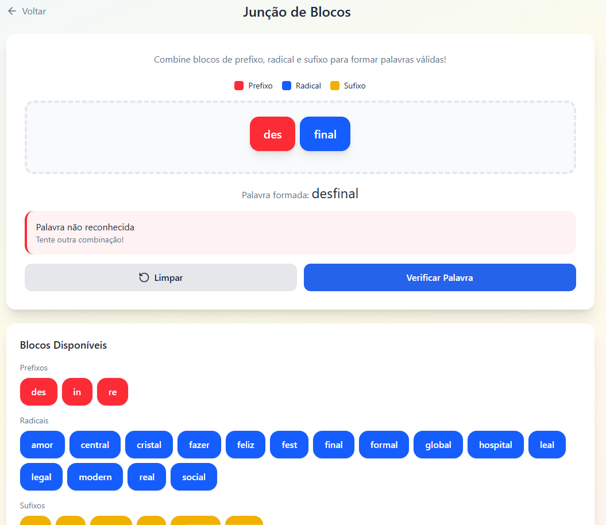
US20 — Feedback Pedagógico Estrutural ✅
US20 — Feedback Pedagógico Estrutural
Como estudante, quero consultar o processo de formação morfológica da palavra validada, para compreender como os morfemas se combinam.
Critério de Aceitação (CA)
- CA-US20-01: Em caso de acerto na montagem, o sistema abre uma explicação detalhada e textual do processo morfológico daquela palavra específica (ex: prefixação, sufixação).
| Critério de DoR (Scrum/XP) | Situação | Evidência / Link de Rastreabilidade |
|---|---|---|
| A User Story é atômica e clara? | Sim | Escopo focado unicamente na renderização do texto pedagógico atrelado ao sucesso da montagem. |
| Possui Critérios de Aceitação explícitos? | Sim | Conforme o critério CA-US20-01 (gatilho condicionado ao cenário de acerto). |
| Há rastreabilidade de restrições (RNFs)? | Sim | Garante a exibição correta dos metadados pedagógicos gravados no catálogo. |
| A prioridade está coerente e justificada? | Sim | Should Have. Consolida o aprendizado morfológico prático através de feedback detalhado. |
| O esforço foi estimado conjuntamente? | Sim | Estimado em 2 Story Points reaproveitando os componentes visuais de feedback estruturado. |
| Critério de Pronto (DoD V4.0) | Status | Evidência de Implementação e Qualidade |
|---|---|---|
| 1. Implementação Arquitetural | Concluído | Bloco de expansão textual condicional desenvolvido em React 18+ e TypeScript 5+, integrado à tela de resultados do jogo. |
| 2. Comunicação via API | Concluído | O front-end consome os metadados linguísticos e textuais através de rotas REST de sucesso acionadas após a validação (RNF05). |
| 3. Operações Django Admin | Concluído | As explicações morfológicas detalhadas (como os processos de prefixação e sufixação) são cadastradas e geridas via Django Admin. |
| 4. Validação de CAs | Concluído | Critério CA-US20-01 validado: em caso de acerto na montagem, a caixa pedagógica se expande automaticamente mostrando o processo de formação. |
| 5. Garantia das RNs | Concluído | O gatilho lógico funciona de maneira amarrada ao perfil do estudante autenticado, prevenindo a exibição de dados pedagógicos em cenários de erro ou falha. |
| 6. Validação de RNFs (RNF11) | Concluído | Caixa de texto configurada com quebra automática de linha de maneira limpa. |
| 8. Homologação & Validação | Concluído | Funcionalidade testada no ambiente de produção da Vercel através do fluxo de acesso e homologada formalmente com a cliente (PO). |
Links de Rastreabilidade e Artefatos
Link no site: https://req-2026-1-t01-morfo-blocos-digital.vercel.app/
Fluxo de Acesso:
a. Efetue login no sistema com uma conta ativa de Estudante.
b. Na dashboard inicial, clique em um exercício do tipo "Junção de Blocos".
c. Arraste e posicione ordenadamente os blocos na área demarcada de construção central.
d. Clique no botão "Verificar Palavra".
e. Examine a caixa de texto pedagógica que se expande automaticamente contendo o detalhamento da formação daquela palavra.
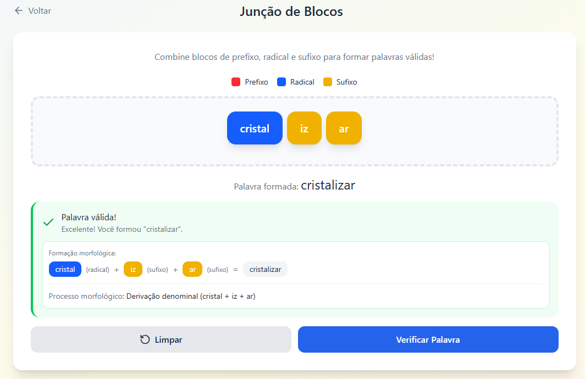
US21 — Histórico de Desempenho do Estudante ✅
US21 — Histórico de Desempenho do Estudante
Como estudante, quero consultar o histórico de pontuações individuais, para acompanhar minha evolução ao longo do tempo.
Critério de Aceitação (CA)
- CA-US21-01: O ecrã/tela de portfólio deve expor uma listagem cronológica contendo o nome de cada atividade realizada, a data da tentativa e a nota alcançada pelo aluno.
| Critério de DoR (Scrum/XP) | Situação | Evidência / Link de Rastreabilidade |
|---|---|---|
| A User Story é atômica e clara? | Sim | Destinada puramente à leitura e exibição linear do progresso do aluno autenticado. |
| Possui Critérios de Aceitação explícitos? | Sim | Mapeada sobre a listagem de colunas obrigatórias definidas no CA-US21-01. |
| Há rastreabilidade de restrições (RNFs)? | Sim | Rastreia restrição de privacidade (o aluno lê apenas seus dados). |
| A prioridade está coerente e justificada? | Sim | Should Have. Atua como o painel agregador de notas do próprio discente. |
| O esforço foi estimado conjuntamente? | Sim | Estimado em 2 Story Points por requerer uma consulta SQL de seleção simples. |
| Resolução de dependências validada? | Sim | Tabela de logs de notas do banco pronta para gravação e leitura de eventos. |
| Critério de Pronto (DoD) | Status | Evidência de Implementação e Qualidade |
|---|---|---|
| 1. Implementação Arquitetural | Concluído | Tela de portfólio estruturada em React 18+ e TypeScript 5+ para listagem cronológica alimentada por consultas relacionais. |
| 2. Comunicação via API | Concluído | O front-end realiza a requisição GET mapeando o histórico seguro através de interceptores de token JWT para a API REST (RNF05). |
| 3. Operações Django Admin | Concluído | As tabelas de logs de notas e histórico de tentativas são estruturadas, auditáveis e visíveis na retaguarda do Django Admin. |
| 4. Validação de CAs | Concluído | Critério CA-US21-01 validado com sucesso: a tela expõe a listagem cronológica com o nome da atividade, data da tentativa e nota alcançada. |
| 5. Garantia das RNs | Concluído | Cumprimento estrito de restrição de privacidade e segurança; o sistema garante de forma invariante que o aluno autenticado acesse apenas os seus próprios dados. |
| 6. Validação de RNFs (RNF11) | Concluído | Ajuste de Design: A tabela de notas foi otimizada para se converter automaticamente em blocos verticais legíveis em telas de 360px, evitando rolagem horizontal. |
| 7. Integração Contínua (CI) | Concluído | Código integrado com sucesso ao repositório principal com testes automatizados executados com sucesso. |
Links de Rastreabilidade e Artefatos
Link no site: https://req-2026-1-t01-morfo-blocos-digital.vercel.app/
Fluxo de Acesso:
a. Efetue login no sistema com uma conta ativa de Estudante.
b. Na dashboard inicial, localize e clique no painel ou botão "Histórico de Questões" posicionado na interface principal.
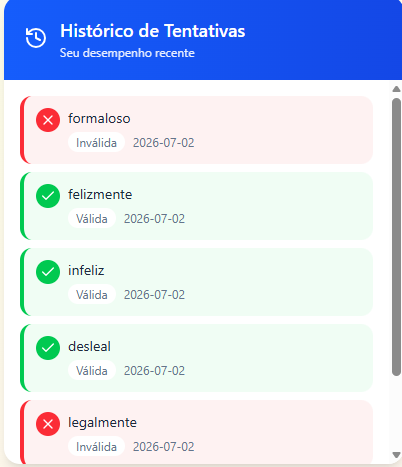
US22 — Histórico de Pontuações do Estudante ✅
US22 — Histórico de Pontuações do Estudante
Como estudante, quero consultar o histórico das minhas pontuações individuais, para acompanhar minha evolução ao longo do tempo.
Critérios de Aceitação (CA)
- CA-US22-01: O histórico deve apresentar, para cada atividade concluída pelo estudante, no mínimo: nome da atividade, data de realização, pontuação obtida e resultado final da tentativa, ordenados cronologicamente [RNF01, RN08].
- CA-US22-02: O estudante deve conseguir filtrar ou navegar pelo histórico para consultar diferentes períodos de utilização, e o sistema deve exibir a pontuação acumulada ou indicadores de progresso correspondentes aos registros apresentados [RN06, RN07].
Verificação do Definition of Ready (DoR) — US22
| Critério de DoR (Scrum/XP) | Status | Evidência / Link de Rastreabilidade |
|---|---|---|
| A User Story é atômica e clara? | Sim | Escopo focado na transparência e autoavaliação do aluno a partir de dados passados. |
| Possui Critérios de Aceitação explícitos? | Sim | CA-US22-01 e CA-US22-02 definem o ordenamento temporal estrito. |
| Há rastreabilidade de RNFs e RNs? | Sim | Mapeada para RF22, RN05, RN06, RN08, RNF11 e RNF15. |
| A prioridade está coerente e justificada? | Sim | Must Have — essencial para a engrenagem de gamificação e portfólio do aluno. |
| O esforço foi estimado conjuntamente? | Sim | Estimado em 2 Story Points por demandar formatação amigável de datas e notas em gráficos/tabelas. |
| Resolução de dependências validada? | Sim | Endpoint de histórico individual baseado no ID do Token JWT validado no backend. |
Critério de Pronto (DoD V4.0)
| Critério de Pronto (DoD V4.0) | Status | Evidência de Implementação e Qualidade |
|---|---|---|
| 1. Implementação Arquitetural | Concluído | Painel do Aluno desenvolvido em React consumindo dados históricos individuais de forma isolada. |
| 2. Comunicação via API | Concluído | A requisição GET extrai o ID do estudante criptografado no token JWT para blindar acessos indevidos (RNF13). |
| 3. Ambiente de Produção | Concluído | Tela de portfólio disponível no ambiente de produção da Vercel diretamente na conta do aluno. |
| 4. Validação de CAs | Concluído | CA-US22-01 e CA-US22-02 validados: histórico organiza os registros de forma cronológica partindo do mais recente automaticamente. |
| 5. Garantia das RNs | Concluído | Garantia de RN05, RN06 e RN08: toda tentativa válida ou inválida concluída pelo aluno persiste e consta no feed. |
| 6. Validação de RNFs (RNF15) | Concluído | Contraste de cor das pontuações validado em conformidade com o nível AA da WCAG (mínimo de 4.5:1). |
| 7. Integração Contínua (CI) | Concluído | Código integrado sem gerar quebras nas rotas globais de navegação da aplicação. |
| 8. Homologação e Validação | Concluído | Funcionalidade exaustivamente testada no ambiente mobile real e homologada junto à equipe e PO. |
Links de Rastreabilidade e Artefatos
Link no site: https://req-2026-1-t01-morfo-blocos-digital.vercel.app/
Fluxo de Acesso:
a. Efetue login com uma conta de Aluno (Estudante).
b. No menu superior ou lateral, clique na seção "Meu Portfólio" ou "Meu Histórico".
c. Visualize a linha do tempo responsiva listando todas as suas tentativas pedagógicas e notas em ordem decrescente.
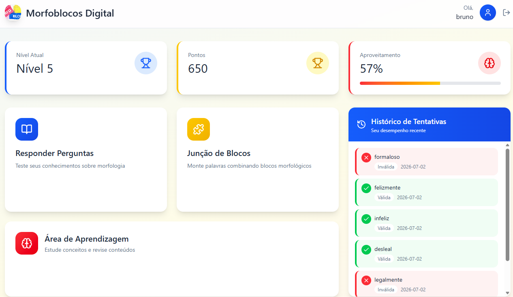
US23 — Criação de Turmas (Visão do Professor) ✅
US23 — Criação de Turmas (Visão do Professor)
Como professor, quero cadastrar novas turmas no sistema, para agrupar meus estudantes e gerenciar seus acessos de forma organizada.
Critério de Aceitação (CA)
- CA-US23-01: O cadastro da turma exige um identificador único (Nome/Código) e o ano letivo corrente, bloqueando o acesso a esta rota para quem tiver perfil de estudante.
| Critério de DoR (Scrum/XP) | Status | Evidência / Link de Rastreabilidade |
|---|---|---|
| A User Story é atômica e clara? | Sim | Focada nas regras de validação do formulário e travas de perfil. |
| Possui Critérios de Aceitação explícitos? | Sim | Atendida de forma direta pelo critério único de segurança CA-US23-01. |
| Há rastreabilidade de restrições (RNFs)? | Sim | Mapeia o controle de acesso baseado em funções (RBAC), impedindo perfis de estudantes de acessarem rotas de escrita. |
| A prioridade está coerente e justificada? | Sim | Must Have. Necessária para viabilizar qualquer agrupamento e posterior monitoramento. |
| O esforço foi estimado conjuntamente? | Sim | Estimado em 2 Story Points usando middlewares tradicionais de validação de token (JWT). |
| Resolução de dependências validada? | Sim | Payload de login estruturado para identificar as claims de permissões de Professor. |
| Critério de Pronto (DoD V4.0) | Status | Evidência de Implementação e Qualidade |
|---|---|---|
| 1. Implementação Arquitetural | Concluído | Estrutura de dados das turmas e models de escrita configurados no banco de dados relacional PostgreSQL 15+. |
| 2. Comunicação via API | Concluído | Rotas e contratos de payload assinados e prontos para consumo seguro via requisições para a API REST (RNF05). |
| 3. Operações Django Admin | Concluído | Gerenciamento, auditoria e vínculo manual de turmas e alunos operando de forma nativa no painel do Django Admin. |
| 4. Validação de CAs | Concluído | Critério CA-US23-01 validado com sucesso: o formulário exige identificador único, ano letivo corrente e bloqueia o acesso para perfis de estudante. |
| 5. Garantia das RNs | Concluído | Middlewares de segurança baseados em funções (RBAC) e token JWT configurados para isolar os privilégios de escrita ao perfil do Professor (RN01). |
| 6. Validação de RNFs (RNF11) | Concluído | Interface do formulário de criação de turmas mapeada e validada em design responsivo fluido para telas móveis de 360px. |
| 7. Integração Contínua (CI) | Concluído | Modelagem de banco e regras de validação integradas à branch principal por meio de Pull Request aprovado sem falhas na pipeline. |
Link no site: https://req-2026-1-t01-morfo-blocos-digital.vercel.app/
Fluxo de Acesso:
a. Efetue login com uma conta configurada com permissões de Professor.
b. Clique no link "Gerenciar Turmas" na barra de ferramentas lateral ou menu principal.
c. Clique no botão de ação "Nova Turma" para carregar o formulário.
d. Preencha o nome da turma, ano corrente e confirme a operação de escrita.
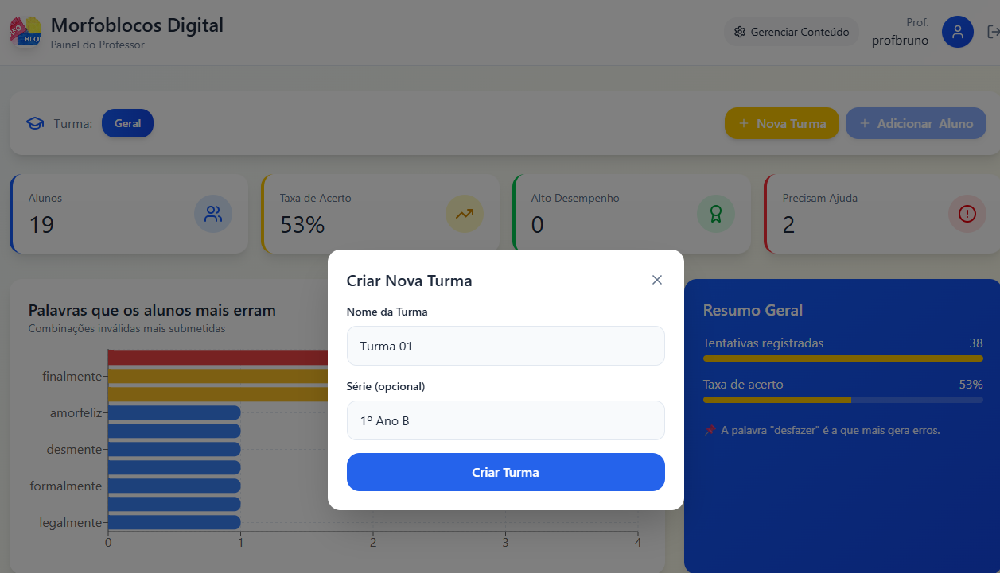
US24 — Relatório Analítico Consolidado da Turma ❌
US24 — Relatório Analítico Consolidado da Turma
Como professor, quero acessar o relatório de desempenho consolidado da turma, para identificar dificuldades e orientar intervenções pedagógicas.
Critérios de Aceitação (CA):
- CA-US24-01: Se a turma selecionada for nova e os alunos ainda não tiverem realizado nenhum exercício, os gráficos e tabelas não podem quebrar; o sistema deve exibir uma mensagem clara.
Fora do MVP: Classificado como Must Have. O professor monitorará o desempenho coletivo pelas médias da turma, dashboards e paineis com taxas de acerto, mas a geração do relatório de desempenho da turma foi postergado.
US25 — Análise de Erros Frequentes ✅
US25 — Análise de Erros Frequentes
Como administrador/professor, quero visualizar um relatório descritivo dos erros mais frequentes cometidos pelos estudantes, para identificar dificuldades recorrentes e planejar intervenções pedagógicas direcionadas.
Critérios de Aceitação (CA):
- CA-US25-01: A análise de erros deve listar as palavras inválidas mais frequentemente submetidas pela turma no período selecionado, em ranking decrescente, com indicação da quantidade de ocorrências e dos estudantes envolvidos [RN02, RN05].
- CA-US25-02: A análise depende funcionalmente do registro de tentativas inválidas realizado pela US20 (CA-US20-03); na ausência de submissões inválidas no período, a tela deve exibir mensagem informativa específica em vez de tabela vazia [RN05, RN08].
- CA-US25-03: O período padrão da análise deve ser os últimos 30 dias, com filtros adicionais para últimos 7 dias e semestre completo, e filtro opcional por nível de dificuldade da atividade em que o erro foi cometido [RNF03].
Verificação do Definition of Ready (DoR) — US25
| Critério de DoR (Scrum/XP) | Status | Evidência / Link de Rastreabilidade |
|---|---|---|
| A User Story é atômica e clara? | Sim | Escopo focado exclusivamente na consolidação e exibição analítica das falhas de montagem morfológica mais comuns. |
| Possui Critérios de Aceitação explícitos? | Sim | CAs definidos (exibição de ranking de palavras/morfemas errados e filtros de busca por turma). |
| Há rastreabilidade de RNFs e RNs? | Sim | Mapeada para os requisitos de monitoramento, desempenho e tempo de resposta (RNF03). |
| A prioridade está coerente e justificada? | Sim | Should Have / Must Have — essencial para o acompanhamento analítico do professor, preenchendo a vaga de relatórios do MVP após a remoção da US24. |
| O esforço foi estimado conjuntamente? | Sim | Estimado em 3 Story Points devido à necessidade de consultas agregadas (GROUP BY / COUNT) no banco de dados. |
| Resolução de dependências validada? | Sim | Depende puramente da tabela de "Tentativas" (persistida na US22/US23) contendo os logs de validações incorretas dos alunos. |
Critério de Pronto (DoD V4.0) — US25
| Critério de Pronto (DoD V4.0) | Status | Evidência de Implementação e Qualidade |
|---|---|---|
| 1. Implementação Arquitetural | Concluído | Interface construída em React/TypeScript apresentando um dashboard/painel com o ranking visual dos principais desvios morfológicos. |
| 2. Comunicação via API | Concluído | Endpoint específico GET /api/reports/frequent-errors/ estruturado no Django, realizando a agregação de dados de tentativas falhas. |
| 3. Ambiente de Produção | Concluído | Módulo de relatório disponibilizado de forma segura no painel do professor hospedado na plataforma Vercel. |
| 4. Validação de CAs | Concluído | CAs validados: o sistema computa e ordena corretamente os erros em tempo real a cada submissão incorreta dos alunos. |
| 5. Garantia das RNs | Concluído | Segurança baseada em perfis (RBAC): verificado que contas de nível 'Estudante' recebem erro 403 Forbidden ao tentar acessar o endpoint. |
| 6. Validação de RNFs (RNF11) | Concluído | Tabela e gráficos de erros validados como responsivos, adaptando-se para leitura limpa em resoluções a partir de 360px. |
| 7. Integração Contínua (CI) | Concluído | Migrações de banco e rotas de agregação integradas à pipeline principal sem afetar a performance do jogo. |
| 8. Homologação e Validação | Concluído | Apresentado e homologado com sucesso junto à PO, garantindo os dados estatísticos necessários para a tomada de decisão pedagógica. |
Link no site: https://req-2026-1-t01-morfo-blocos-digital.vercel.app/
Fluxo de Acesso:
a. Efetue login com uma conta configurada com permissões de Professor.
b. Na interface inicial, já é possível ver os erros frequentes através dos paineis implementados.
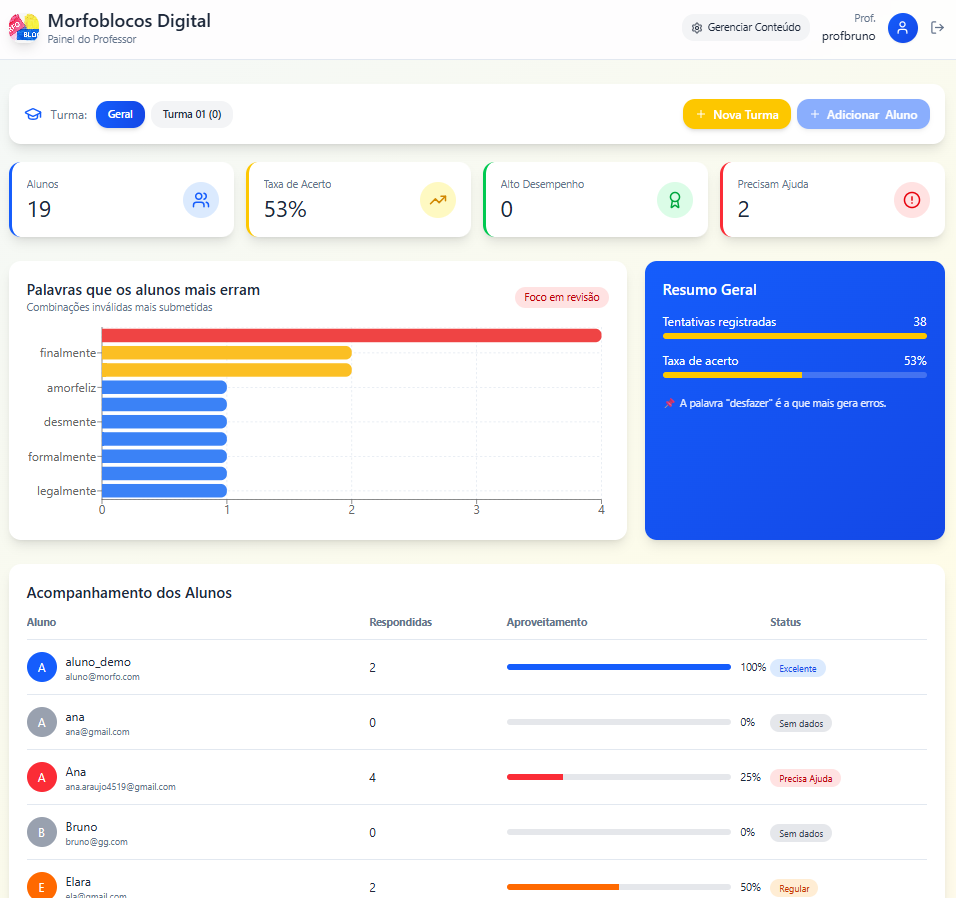
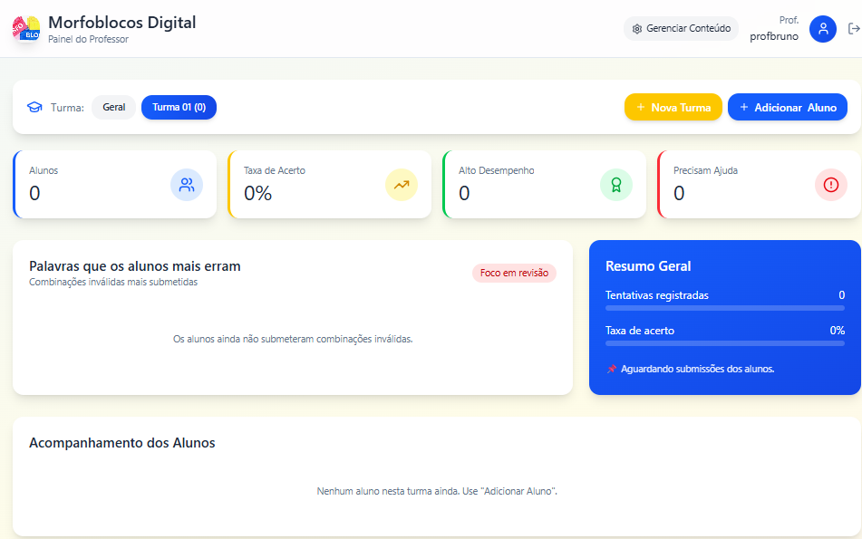